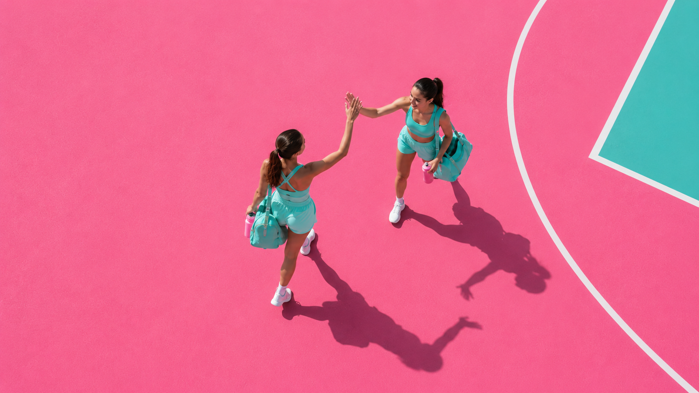

Avec Athletica, trouver une partenaire de sport devient simple, naturel et sécurisé. L'application permet aux jeunes filles de rencontrer d'autres sportives partageant les mêmes centres d'intérêt, le même niveau ou les mêmes objectifs, afin de pratiquer ensemble dans un environnement motivant. Que ce soit pour commencer une nouvelle activité, reprendre le sport ou simplement ne plus s'entraîner seule, Athletica facilite la création de liens entre passionnées. Grâce à un système de mise en relation pensé pour favoriser la confiance et l'entraide, chaque utilisatrice peut rejoindre une communauté bienveillante où les échanges, la motivation et le plaisir de pratiquer ensemble sont au cœur de l'expérience. L'objectif est de donner à chacune la possibilité de faire le premier pas vers une nouvelle rencontre sportive, tout en se sentant accompagnée et en sécurité.